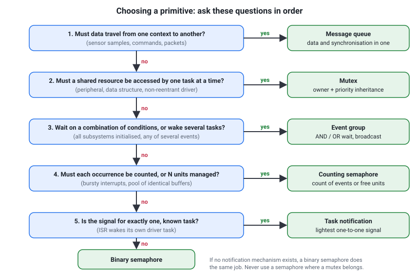

Choosing a primitive
Each primitive in Part II solves a different problem. This lesson puts them side by side and gives a procedure for picking the right one, so the hazards in Part III have fewer places to appear.
- Classify a synchronisation need as data transfer, mutual exclusion, condition waiting, counting or one-to-one signalling.
- Select the matching primitive with a short decision procedure.
- Compare all primitives on ownership, ISR use, payload, waiters woken and priority inheritance.
- Recognise the most common mismatches and what each one costs.
Start from the need, not the API
Every interaction between two contexts is one of five kinds:
- Transfer: data must go from A to B.
- Exclusion: A and B must not be inside the same code or touch the same resource at the same time.
- Condition: B must wait until some combination of things is true, possibly together with other tasks.
- Counting: B must handle each of N occurrences, or N units are shared.
- Signal: A must tell exactly one known task B that something happened.

The order matters. A queue is first because, when data must move anyway, it also provides the synchronisation, and the need for a separate lock disappears. A mutex comes before signalling primitives because a semaphore used as a lock is the most common and most damaging mismatch.
Side-by-side comparison
| Property | Binary sem. | Counting sem. | Mutex | Event group | Task notification | Message queue |
|---|---|---|---|---|---|---|
| Purpose | signal an event | count events / units | exclusive access | wait on conditions, broadcast | lightweight signal to one task | transfer data |
| State | 0 or 1 | 0 … limit | locked/unlocked + owner | word of bits | word in target TCB | 0 … depth messages |
| Owner | no | no | yes | no | receiver is fixed | no |
| Priority inheritance | no | no | yes | no | no | no |
| Give/set/send from ISR | yes | yes | no | yes (some kernels defer) | yes | yes, no-wait only |
| Waiters woken per operation | one | one | one (new owner) | all whose condition holds | the target | one |
| Remembers repetitions | no | yes | n/a | no | in increment mode | yes, with data |
| Payload | none | none | none | bits | one word | a message per slot |
| Sender can block | no | no | n/a | no | no | yes, when full |
Worked example: a data logger
A data logger samples an ADC, filters the data, writes records to an SD card, shows status on a display and accepts commands over USB.
| Interaction | Kind | Primitive |
|---|---|---|
| ADC DMA half/full-buffer ISR → filter task: "buffer N is ready" | transfer (buffer index) | Message queue of buffer indices (depth 2) |
| Filter task → storage task: filtered records | transfer | Message queue of record pointers from a block pool (ownership transfer) |
| Storage task and USB command task both access the SD card | exclusion | Mutex, or make the storage task the SD card's gatekeeper and send it USB requests through its queue |
| Logging starts only when "card mounted" AND "clock set" AND "user pressed start" | condition | Event group, wait for all three bits |
| Display task needs the latest battery voltage | transfer of latest state | Depth-1 overwrite queue, or a mutex-protected variable |
| USB ISR → USB task: "endpoint has data" | signal to one task | Task notification (or binary semaphore) |
Note the second option for the SD card. Making one task the only user of the card removes the mutex and with it the possibility of priority inversion or deadlock on that resource.
Common mismatches and their cost
- Binary semaphore as a lock → no owner check, no priority inheritance: unbounded priority inversion (Lesson 11).
- Mutex for signalling ("unlock to tell the other task") → violates ownership; the kernel rejects it or behaviour is undefined.
- Binary semaphore or event bit for events that must all be processed → events are silently merged.
- Shared global + semaphore instead of a queue → the producer can overwrite the global before the consumer reads it; you have rebuilt a depth-1 queue with a race.
- Event group for a single waiter and a single bit → works, but costs more than a semaphore or notification.
- Queue of large structures by copy → CPU spent on copying, RAM doubled; pass pointers with ownership transfer.
- Disabling interrupts for long task-only critical sections → every ISR's latency grows; a mutex was the right tool.
What this becomes in Zephyr
| Concept | Zephyr object | Key calls |
|---|---|---|
| Binary / counting semaphore | struct k_sem | K_SEM_DEFINE, k_sem_take, k_sem_give |
| Mutex | struct k_mutex | K_MUTEX_DEFINE, k_mutex_lock, k_mutex_unlock |
| Event group | struct k_event (CONFIG_EVENTS) | k_event_post, k_event_wait, k_event_wait_all, k_event_clear |
| Task notification | no direct equivalent | per-thread k_sem/k_event, k_poll_signal |
| Message queue (copy) | struct k_msgq | K_MSGQ_DEFINE, k_msgq_put, k_msgq_get |
| Pointer passing | k_fifo + k_mem_slab | k_fifo_put, k_fifo_get, k_mem_slab_alloc |
| Wait on several objects | k_poll | k_poll, k_poll_event_init |
| ISR-shared data | k_spinlock, atomic_t | k_spin_lock, atomic_inc, atomic_cas |